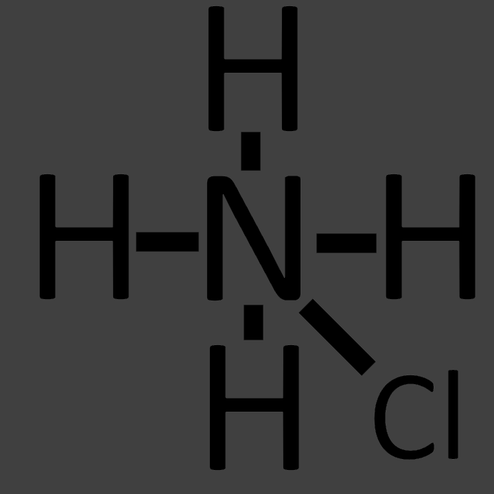
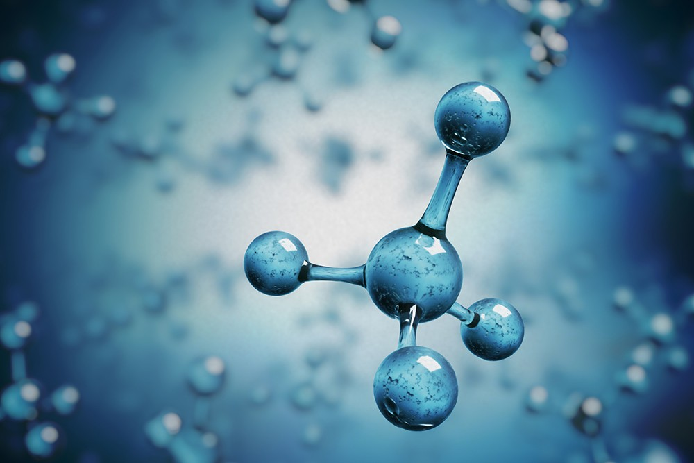
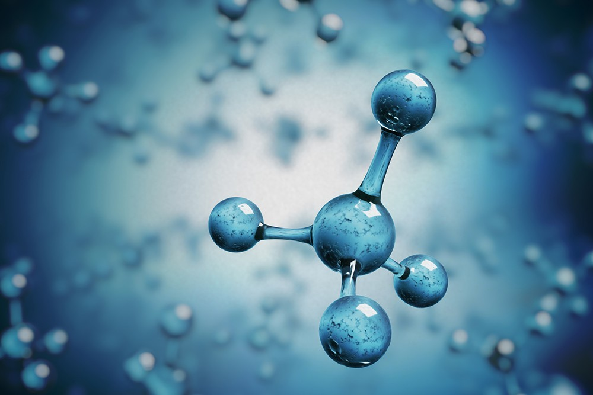

Scheikunde H7
Millo
Legering (Brons)
Toepassing
Vroeger werd brons gebruikt voor wapens, tegenwoordig wordt het ook gebruikt voor kunstwerken. Omdat brons een goede corrosiebestendigheid waarde heeft wordt brons ook gebruikt voor voorwerpen die eventueel in contact met water kunnen komen.
Winning (of synthese)
Koper en Tin zijn bijde een winning.
Brons is de synthese gemaakt van koper en tin
Stofeigenschappen & molecuulmassa met rekenvoorbeeld van atoomsoorten en de legering
Eigenschappen van brons zijn:
Kleur: Donker bruin met groen
Molecuulmassa: 70,3 u
Kookpunt: 2503 tot 2693 K
Smeltpunt: 1103 tot 1293 K
Plaats in het periodiek systeen in combo met eigenschappen
Koper:
Atoomnummer: 29
Kleur: Roodbruin
Smeltpunt: 1357 K
Kookpunt: 2843 K
Atoommassa: 63,5 u
Tin:
Atoomnummer: 50
Kleur: Zilvergrijs
Smeltpunt: 505 K
Kookpunt: 2896
Atoommassa: 118,7 u
Aantal protonen, neutronen en elektronen per atoomsoort
| Atoomsoort | Protonen | Neutronen | Elektronen |
|---|---|---|---|
| Koper | 29 | 35 | 29 |
| Tin | 50 | 69 | 50 |
Uitleg (microniveau) in welke fasen deze stof stroom geleid
Een legering geleid stroom in de vaste en vloeibare fasen.
Wanneer er ruimte is voor de deeltjes om te bewegen en wanneer
ze geladen zijn, wordt er stroom geleid.
Uitleg binding in legering
?
Rekenvoorbeeld dat je het massapercentage van één van de atoomsoorten in de legering kan uitrekenen
In 57mg brons zit 7mg tin en 50mg koper;
50 / 57 * 100 = 87.7192982%
Brons bestaat dus uit 87.7192982% koper.
Zout Salmiak
Toepassing
Salmiak wordt gebruikt om drop van te maken
Synthese & kloppende reactievergelijking
N H3 + H Cl -> N H4 Cl
Rekenvoorbeeld van hoeveel grondstoffen je nodig hebt om 1 kg salmiak te maken
Werkelijkwaar geen idee
Stofeigenschappen & molecuulmassa met rekenvoorbeeld van de atoomsoorten
| Atoomsoort | Plaats in Periodiek Systeem | Kleur | Smeltpunt | Kookpunt | Atoommassa |
|---|---|---|---|---|---|
| N (stikstof) | 7 | Kleurloos | 63,3 K | 77,2 K | 14,0067 u |
| H (waterstof) | 1 | Kleurloos | 14,01 K | 20,28 K | 1,0079 u |
| Cl (chloor) | 17 | Wit | 172 K | 239 K | 35,453 u |
Triviale naam & rationele naam
Triviale naam: Salmiak
Rationele naam: Ammoniumchloride
Aantal protonen, neutronen en elektronen aanwezig in de stof, zowel als per ion als in totaal
| Atoomsoort | Protonen | Neutronen | Elektronen |
|---|---|---|---|
| Totaal | 28 | 25 | 37 |
| Cl | 17 | 18 | 16 |
| H | 1 | 0 | 1 |
| N | 7 | 7 | 13 |
Uitleg (microniveau) in welke fase het gekozen zout stroom geleidt
Een zout kan niet in een vaste fase geleiden, maar wel in een vloeibare fase.
Zouten bestaan gedeeltelijk uit geladen deeltjes. Wanneer zout in contact komt met water worden de moleculaire atomen negatief geladen, en de metale atomen positief. Daardoor kan het stroom geleiden.
Uitleg bindingen in zout
De elektrische aantrekkingskrachten tussen de positieve en negatieve
ionen is erg sterk, daardoor ontstaat een sterke binding tussen de ionen.
Deze ionen delen één of meer elektronen.
Modelmatige schets van het zout
Moleculaire Stof (Water)
Toepassing
Water wordt gebruikt om te voorkomen dat levende organismen gedehydrateerd raken.
Winning (of Synthese)
Water is een synthese gemaakt van Waterstof en Zuurstof.
Stofeigenschappen & molecuulmassa met rekenvoorbeeld van de atoomsoorten
Molecuulmassa: 18,01528 g/mol
| Atoomsoort | Kleur | Smeltpunt | Kookpunt | Atoommassa |
|---|---|---|---|---|
| H (waterstof) | Kleurloos | 14,01 K | 20,28 K | 1,0079 u |
| O (zuurstof) | Kleurloos | 54,8 K | 90,2 K | 15,999 u |
Triviale naam en rationele naam
Triviale naam: Water
Rationele naam: Waterstofdioxide
(Molecuul)Massa
18,01528 g/mol
Plaats in het periodiek systeen & de covalentie van de atoomsoorten waaruit het molecuul is opgebouwd
| Atoomsoort | Covalentie | Plaats in Periodiek Systeem |
|---|---|---|
| H (waterstof) | 1 | 1 |
| O (zuurstof) | 2 | 8 |
Aantal protonen, neutronen en elektronen (totaal & per atoomsoort)
| Atoomsoort | Protonen | Neutronen | Elektronen |
|---|---|---|---|
| Totaal | 10 | 8 | 10 |
| H | 1 | 0 | 1 |
| O | 8 | 8 | 8 |
Hydrofiel/hydrofoob met verklaring waarom
Hydrofiel ??
Uitleg (microniveau) in welke fase(n) de stof stroom geleidt
Omdat het een moleculaire stof is, geleid het in geneen van de fasen.
Moleculen kunnen alleen stroom geleiden als er geladen deeltjes zijn,
en moleculaire stoffen zijn niet geladen.
Structuurformule

Bronnen
 
